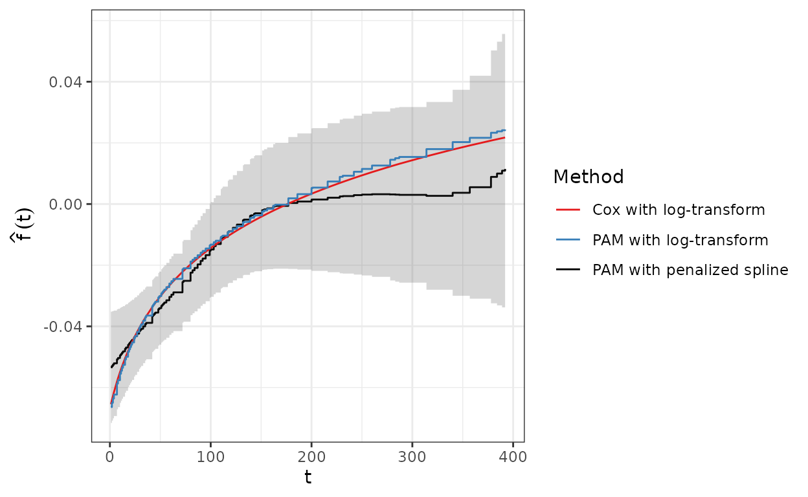

library(tidyr)
library(dplyr)
library(ggplot2)
theme_set(theme_bw())
library(survival)
library(mgcv)
library(pammtools)
Set1 <- RColorBrewer::brewer.pal(9, "Set1")
Greens <- RColorBrewer::brewer.pal(9, "Greens")
Purples <- RColorBrewer::brewer.pal(9, "Purples")In this vignette we show examples of how to fit time-varying effects of time-constant continuous covariates. Note that time-varying effects of time-constant categorical variables are analogous to stratified proportional hazards models, where observations from different levels of the categorical variable have different baseline hazards. That setting is described in the stratification vignette. Note that all time-varying effects in a PAM are still assumed to be piece-wise constant over the intervals used to specify the PAM!
In the following we denote the continuous time-constant covariate with and time with . A time-varying effect of can then be specified as an interaction term between and , where different levels of complexity and flexibility for this interaction are possible:
: Linear effect of with time-variation given by , where is a known or pre-specified transformation of time , e.g. the -function.
: Non-linear effect of , (linearly) time-varying with , where is a known or pre-specified transformation of time
: A varying coefficient model in , where time-variation is non-linear and estimated from the data. If is a dummy variable coding for levels of a categorical variable this constitutes a stratified model with a different “baseline” hazard for each category, see the strata vignette.
: A non-linear effect of that varies non-linearly over time .
For illustration and comparison we use the veteran data
presented in the vignette of the survival package
(vignette("timedep", package = "survival")). Besides
information on survival, the data set contains the Karnofsky performance
scores karno (the higher the better), age and
whether prior therapy occurred, along with some additional
covariates, see help("veteran", package = "survival") for
details:
# for some reason the prior variable is coded 0/10 instead of 0/1
veteran <- survival::veteran
veteran <- veteran %>%
mutate(
trt = 1L * (trt == 2),
prior = 1L * (prior == 10)) %>%
filter(time < 400) # restriction for illustration
head(veteran)## trt celltype time status karno diagtime age prior
## 1 0 squamous 72 1 60 7 69 0
## 3 0 squamous 228 1 60 3 38 0
## 4 0 squamous 126 1 60 9 63 1
## 5 0 squamous 118 1 70 11 65 1
## 6 0 squamous 10 1 20 5 49 0
## 7 0 squamous 82 1 40 10 69 1To fit a time-varying effect of karno the authors
suggest to use the function
This is an instance of the “known
time-variation function” case above with
vfit <- coxph(
formula = Surv(time, status) ~ trt + prior + karno + tt(karno),
data = veteran,
tt = function(x, t, ...) x * log(t + 20))
coef(vfit)## trt prior karno tt(karno)
## 0.07914694 0.12051224 -0.15466404 0.02930082Thus the time-varying component of the effect becomes :
To fit a PAM with equivalent model specification (except for the baseline hazard) we can use
# data transformation
ped <- veteran %>% as_ped(Surv(time, status)~., id = "id") %>%
mutate(logt20 = log(tstart + (tstart - tend) / 2 + 20))
head(ped) %>% select(interval, ped_status, trt, karno, age, prior, logt20)## interval ped_status trt karno age prior logt20
## 1 (0,1] 0 0 60 69 0 2.970414
## 2 (1,2] 0 0 60 69 0 3.020425
## 3 (2,3] 0 0 60 69 0 3.068053
## 4 (3,4] 0 0 60 69 0 3.113515
## 5 (4,7] 0 0 60 69 0 3.113515
## 6 (7,8] 0 0 60 69 0 3.277145
# fit model
pam <- gam(ped_status ~ s(tend) + trt + prior + karno + karno:logt20,
data = ped, offset = offset, family = poisson())
cbind(
pam = coef(pam)[2:5],
cox = coef(vfit))## pam cox
## trt 0.04795134 0.07914694
## prior 0.11689786 0.12051224
## karno -0.15921724 -0.15466404
## karno:logt20 0.03049036 0.02930082
# compare fits
plot(x = t, y = coef(vfit)["karno"] + coef(vfit)["tt(karno)"] * log(t + 20),
type = "l", ylab = "Beta(t) for karno", ylim = c(-.1, .05), las = 1,
col = Set1[1])
t_pem <- int_info(ped)$tend
lines(x = t_pem, y = coef(pam)["karno"] + coef(pam)["karno:logt20"] * log(t_pem + 20),
col = Set1[2], type = "s")Both methods yield very similar estimates of the time-varying effect of the Karnofsky-Score, with a reduced hazard for higher-scoring patients at the beginning of the follow-up that diminishes over time and turns into an increased hazard for higher-scoring patients after about day 150.
In case we don’t want to pre-specify which shape the time-dependency
should have, we can specify the effect of karno as
,
where
is estimated from the data:
# no need to specify main effect for karno here
pam2 <- gam(ped_status ~ s(tend) + trt + prior + s(tend, by = karno),
data = ped, offset = offset, family = poisson())karno for all three models
term.df <- ped %>% ped_info() %>% add_term(pam2, term = "karno") %>%
mutate_at(c("fit", "ci_lower", "ci_upper"), funs(. / .data$karno)) %>%
mutate(
cox.fit = coef(vfit)["karno"] + coef(vfit)["tt(karno)"] * log(tend + 20),
pam.fit = coef(pam)["karno"] + coef(pam)["karno:logt20"] * log(tend + 20))## Warning: `funs()` was deprecated in dplyr 0.8.0.
## ℹ Please use a list of either functions or lambdas:
##
## # Simple named list: list(mean = mean, median = median)
##
## # Auto named with `tibble::lst()`: tibble::lst(mean, median)
##
## # Using lambdas list(~ mean(., trim = .2), ~ median(., na.rm = TRUE))
## Call `lifecycle::last_lifecycle_warnings()` to see where this warning was
## generated.
gg_tv_karno <- ggplot(term.df, aes(x = tend, y = fit)) +
geom_step(aes(col = "PAM with penalized spline")) +
geom_stepribbon(aes(ymin = ci_lower, ymax = ci_upper), alpha = 0.2) +
geom_line(aes(y = cox.fit, col = "Cox with log-transform")) +
geom_step(aes(y = pam.fit, col = "PAM with log-transform")) +
scale_color_manual(name = "Method", values = c(Set1[1:2], "black")) +
xlab("t") + ylab(expression(hat(f)(t)))
The semi-parametric PAM model estimate for increases fairly linearly up to day 150 and flattens out at about 0 (i.e., no effect of Karnofsky-Scores on the hazard) afterwards.
To fit a non-linear, non-linearly time-varying effect we can specify a two-dimensional interaction between the covariate of interest (here the Karnofsky-Score and a variable that represents time in the respective interval, e.g. interval end-points) using tensor product terms.
In mgcv::gam such two-dimensional effects can be
directly used either via te or ti terms in the
model specification. The later is especially useful for disentangling
the marginal (time-constant) and interaction (time-varying) effects of
the respective covariate.
Below we first fit a model using the te specification.
Note that we did not include a s(tend) term here, as the
time-variable tend is already present in the
te term, thus the effect te(tend, karno) also
includes the shape of the baseline hazard as well. The
level of the baseline log hazard is given by the intercept of
the model.
# Non-linear, non-linearly time-varying effects
pam3 <- gam(
formula = ped_status ~ trt + prior + s(age) + te(tend, karno),
data = ped,
family = poisson(),
offset = offset)The summary of the model indicates that the estimated bivariate function is highly non-linear ():
summary(pam3)##
## Family: poisson
## Link function: log
##
## Formula:
## ped_status ~ trt + prior + s(age) + te(tend, karno)
##
## Parametric coefficients:
## Estimate Std. Error z value Pr(>|z|)
## (Intercept) -4.96563 0.16877 -29.422 <2e-16 ***
## trt 0.11795 0.19881 0.593 0.553
## prior 0.01467 0.20946 0.070 0.944
## ---
## Signif. codes: 0 '***' 0.001 '**' 0.01 '*' 0.05 '.' 0.1 ' ' 1
##
## Approximate significance of smooth terms:
## edf Ref.df Chi.sq p-value
## s(age) 1.003 1.006 0.371 0.546
## te(tend,karno) 8.859 11.182 60.369 <2e-16 ***
## ---
## Signif. codes: 0 '***' 0.001 '**' 0.01 '*' 0.05 '.' 0.1 ' ' 1
##
## R-sq.(adj) = 0.00423 Deviance explained = 6.92%
## UBRE = -0.83464 Scale est. = 1 n = 5392The 3D perspective plot can aid interpretation, where y- and x-axes depict the Karnofsky-Score and the time respectively and the z-axis displays the contribution of the effect to the log-hazard for each combination of and .1
plot(pam3, select = 3, scheme = 1, theta = 120, ticktype = "detailed")Such 3D plots are sometimes difficult to interpret, thus we also provide a heat-/contourplot (left panel) with respective slices for fixed values of the Karnofsky-Score (middle panel) and fixed time-points/intervals (right panel) below.
The left panel depicts the Karnofsky-Score on the y-axis and the time
on the x-axis. The value of
is visualized using a color gradient, where blue colors indicate
log-hazard decrease and red colors a log-hazard increase. The grayed out
areas depict combinations of karno and tend
that were not present in the data. Dotted horizontal and vertical lines
indicate slices that are displayed in the middle and right panel. For
fixed
,
we obtain the effect of the Karnofsky-Score on the log-hazard at the
beginning of the follow-up (see also right panel for
),
which decreases strongly from low to high values of
.
Holding the Karnofsky-Score constant, we can see how the log hazard changes over time for different (middle panel). For larger values () the log-hazard is smaller at the beginning and increases over the course of the follow-up, while for small values () the log-hazard is positive and decreases toward later time points. This could indicate that the effect of the Karnofsky-Score tends towards 0 over time as the information collected at the beginning of the follow-up becomes outdated (but see uncertainty).
# heat map/contour plot
te_gg <- gg_tensor(pam3) +
geom_vline(xintercept = c(1, 51, 200), lty = 3) +
geom_hline(yintercept = c(40, 75, 95), lty = 3) +
scale_fill_gradient2(
name = expression(hat(f)(list(x[plain(karno)], t))),
low = "steelblue", high = "firebrick2") +
geom_contour(col = "grey30") +
xlab("t") + ylab(expression(x[plain(karno)])) +
theme(legend.position = "bottom")## Scale for fill is already present.
## Adding another scale for fill, which will replace the existing scale.
# plot f(karno, t) for specific slices
karno_df <- ped %>%
make_newdata(tend = unique(tend), karno = c(40, 75, 95)) %>%
add_term(pam3, term = "karno")
# shortcut
# gg_slice(ped, pam3, "karno", tend = unique(tend), karno = c(40, 75, 95))
karno_gg <- ggplot(karno_df, aes(x = tend, y = fit)) +
geom_step(aes(col = factor(karno)), lwd = 1.1) +
geom_stepribbon(aes(ymin = ci_lower, ymax = ci_upper, fill = factor(karno)),
alpha = .2) +
scale_color_manual(
name = expression(x[plain(karno)]),
values = Greens[c(4, 7, 9)]) +
scale_fill_manual(
name = expression(x[plain(karno)]),
values = Greens[c(4, 7, 9)]) +
ylab(expression(hat(f)(list(x[plain(karno)], t)))) +
xlab("t") + coord_cartesian(ylim = c(-4, 3)) +
theme(legend.position = "bottom")
time_df <- ped %>%
make_newdata(tend = c(1, 51, 200), karno = seq(20, 100, by = 5)) %>%
add_term(pam3, term = "karno")
time_gg <- ggplot(time_df, aes(x = karno)) +
geom_line(aes(y = fit, col = factor(tend)), lwd = 1.1) +
geom_ribbon(aes(ymin = ci_lower, ymax = ci_upper, fill = factor(tend)),
alpha = .2) +
scale_color_manual(name = "t", values = Purples[c(4, 6, 8)]) +
scale_fill_manual(name = "t", values = Purples[c(4, 6, 8)]) +
ylab(expression(hat(f)(list(x[plain(karno)], t)))) +
xlab(expression(x[plain(karno)])) + coord_cartesian(ylim = c(-4, 3)) +
theme(legend.position = "bottom")The following figure shows the estimated effect (middle panel) along
with a pointwise upper (right) and lower (left) CI. Note that we have to
be somewhat cautious with interpretation, considering the large
uncertainty of the effect estimate, especially for lower
Karnofsky-Scores and later time-points. Also note that the estimate does
not include the estimated average time-constant log-hazard
(coefficients(pam3)["(Intercept)"]=-4.966) and its
uncertainty.
gg_tensor(pam3, ci = TRUE) +
xlab("t") + ylab(expression(x[plain(karno)]))Note that the graphical representation in the 3D
wireframe plot as well as the heatmap/contour plots below are not exact
– these effects are actually step functions over time, with steps at the
interval end points tend, since a PAM implies that
all time-varying effects are piece-wise constant over the
intervals used for the fit. In practice, this subtle difference can be
neglected if the intervals are small enough, as in this case.↩︎